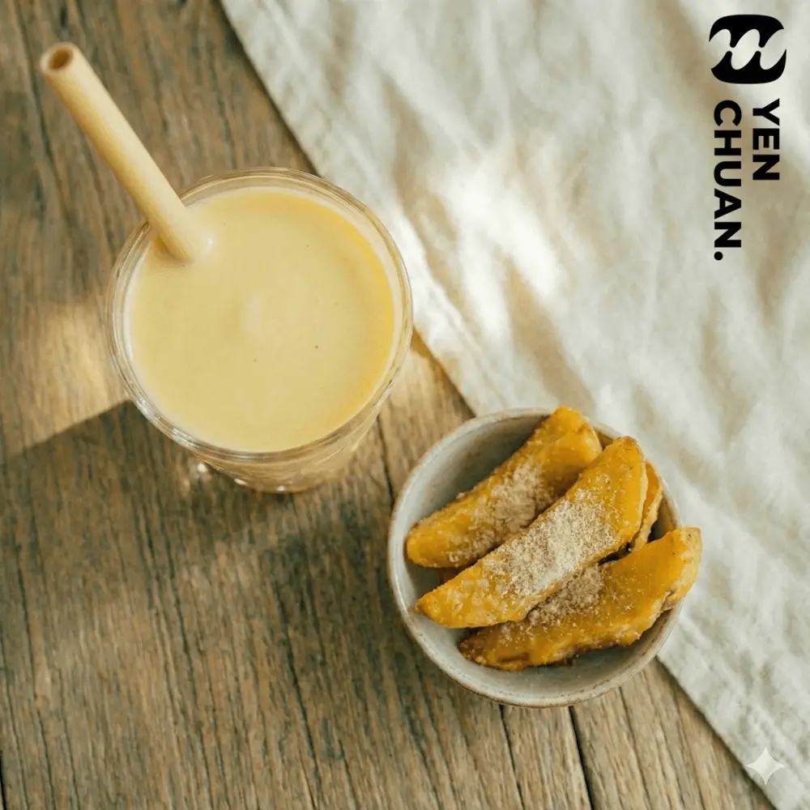
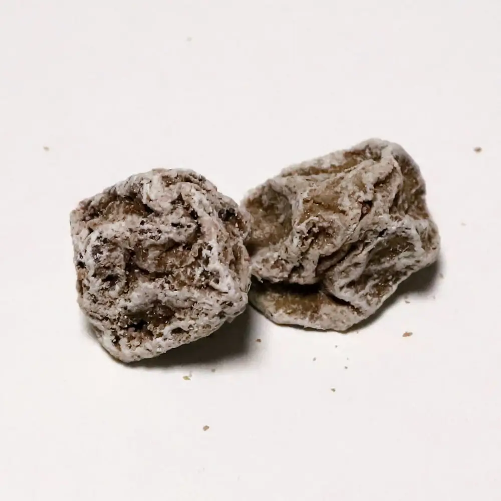
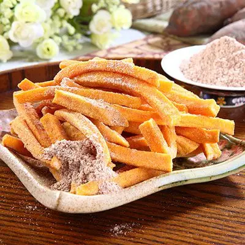
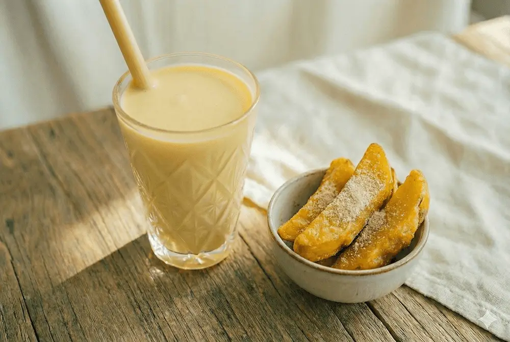

文章 / 飲品配方與資訊
Zesty yet sweet, it’s our pickled plum sweet potato!
這篇是英文原文，尚未完成繁體中文翻譯。中文選單與相關商品連結不會切回英文介面。

查看英文原文（尚未翻譯）
Want to enjoy more sweet potato, but getting tired of the usual baked/roasted type?
Why not try pickled plum?
With our pickled plum sweet potato powder, we’ve turned this classic Taiwanese treat into a drinkable form.
Read on to learn more!

What’s pickled plum?
Also known as “Li Hing Mui” or “Hua mei”, Chinese pickled plum is a kind of dried, pickled Chinese plum with a distinctive salty flavour.
While it originated from Guangzhou, the treat soon spread to other countries!
In Japan it was known as “hoshiume”, though the Japanese variant might be a bit sweeter in comparison.
Meanwhile, Hawaiians love snacking on Li Hing Mui, even using its powdered form as a seasoning!
Some also say that the Mexican Chamoy has its roots in Hua Mei, though how exactly did it evolve into Chamoy has been debatable.
What makes pickled plum so great?
Pickled plum isn’t just a burst of flavour, it also has some health benefits too:
Aids digestion
The plum contains both organic acids and dietary fibres, which help with digestion.
What’s more, the sour plum also drives appetite – just imagining the flavour sets you salivating!
Detoxing
The powder is packed with various antioxidants such as anthocyanidin,
which help flush the body of toxins and help improve liver health.
Delicious, and gives you a good cleansing to boot!
Stave off the heat
Feeling the summer sun beating down on you? Make some pickled plum tea!
The drink is the perfect thirst-quencher, and helps soothe parched throats!
Packed with nutrients
Pickled plum is a good source of various nutrients, including vitamin A, vitamin C and Calcium.
In fact, it boasts several times the amount of Calcium and Iron compared to bananas. Who knew a tiny dried fruit can contain so much?
Now add sweet potato!
What about Taiwan? Aside from enjoying it as a snack, huamei powder is also a popular seasoning. When you visit a night market in Taiwan, chances are you’ve already given it a try!
It’s often either added to fried chicken pieces, sprinkled on top of sliced fruits such as pomelo, or in this case – sweet potato fries.
With a unique blend of sweet, sour and savoury flavours, who needs tomato ketchup?


Pickled plum sweet potato boba
With a combination of creamy sweet potato and zesty huamei, this drink captures the flavours of the classic street food.
Add some tapioca pearls, and you have a night market in a cup!
What you’ll need
How to make
Cook the tapioca pearls and drain, set aside
Blend the powder with milk until smooth, add ice cubes and shake
Add the mixture to a glass or cup, then add the cooked tapioca pearls. Top up with more ice cubes
Want an extra shot of flavour? Garnish with more huamei powder, or add a Mexican flair by rimming the cup with some chamoy sauce!
Check it out!
Want to have a taste of this traditional combination?
Contact us to get started!